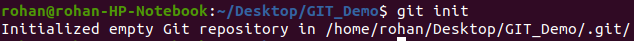
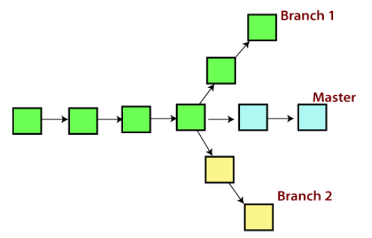
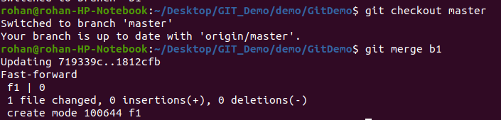
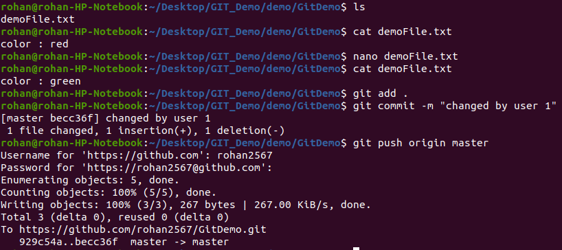
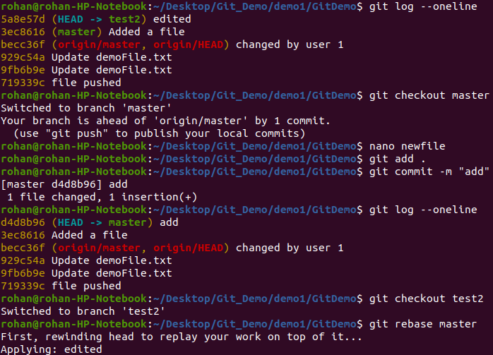
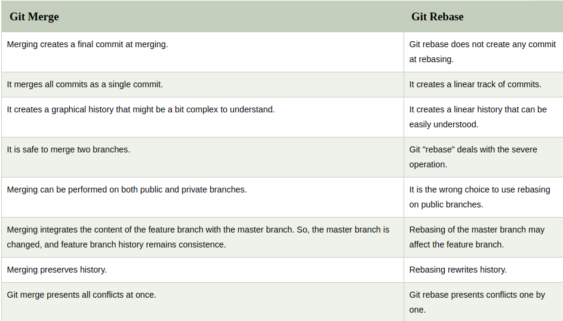
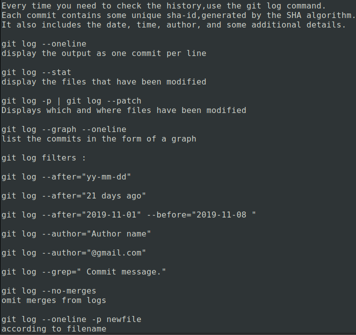

What is GIT ?
Git is an open-source distributed version control system. It is designed to handle minor to major projects with high speed and efficiency. It is developed to co-ordinate the work among the developers. The version control allows us to track and work together with our team members at the same workspace.
Git is foundation of many services like GitHub and GitLab, but we can use Git without using any other Git services. Git can be used privately and publicly.
It is superior to other SCM tools like Subversion, CVS, Perforce, and ClearCase.
Benefits Of GIT
Features Of Git
Open Source
Git is an open-source tool. It is released under the GPL (General Public License) license.
Scalable
Git is scalable, which means when the number of users increases, the Git can easily handle such situations.
Distributed
One of Git's great features is that it is distributed. Distributed means that instead of switching the project to another machine, we can create a "clone" of the entire repository. Also, instead of just having one central repository that you send changes to, every user has their own repository that contains the entire commit history of the project. We do not need to connect to the remote repository; the change is just stored on our local repository. If necessary, we can push these changes to a remote repository.
Security
Git is secure. It uses the SHA1 (Secure Hash Function) to name and identify objects within its repository. Files and commits are checked and retrieved by its checksum at the time of checkout. It stores its history in such a way that the ID of particular commits depends upon the complete development history leading up to that commit. Once it is published, one cannot make changes to its old version.
Speed
Git is very fast, so it can complete all the tasks in a while. Most of the git operations are done on the local repository, so it provides a huge speed. Also, a centralized version control system continually communicates with a server somewhere.
Branching and Merging
Git allows the creation of multiple branches without affecting each other. We can perform tasks like creation, deletion, and merging on branches, and these tasks take a few seconds only.
Some features that can be achieved by branching:
1. Create a separate branch for a new module of the project, commit and delete it whenever we want.
2. We can have a production branch, which always has what goes into production and can be merged for testing in the test branch.
3. We can create a demo branch for the experiment and check if it is working. We can also remove it if needed.
4 .The core benefit of branching is if we want to push something to a remote repository,
we do not have to push all of our branches. We can select a few of our branches, or all of them
together.
Staging Area
Staging Area can be considered as a preview of our next commit, moreover, an intermediate area where commits can be formatted and reviewed before completion. When you make a commit, Git takes changes that are in the staging area and make them as a new commit. We are allowed to add and remove changes from the staging area. The staging area can be considered as a place where Git stores the changes.
Maintains Clean History
Git facilitates with Git Rebase; It is one of the most helpful features of Git. It fetches the latest commits from the master branch and puts our code on top of that. Thus, it maintains a clean history of the project.
GIT vs GITHUB
GIT vs SVN
Version Control System
A version control system is a software that tracks changes to a file or set of files over time so that you can recall specific versions later. It also allows you to work together with other programmers.
The version control system is a collection of software tools that help a team to manage changes in a source code. It uses a special kind of database to keep track of every modification to the code.
Developers can compare earlier versions of the code with an older version to fix the mistakes.
Types of Version Control System
Localized Version Control Systems
The localized version control method is a common approach because of its simplicity. But this approach leads to a higher chance of error. In this approach, you may forget which directory you're in and accidentally write to the wrong file or copy over files you don't want to.
To deal with this issue, programmers developed local VCSs that had a simple database. Such databases kept all the changes to files under revision control. A local version control system keeps local copies of the files.
Centralized Version Control Systems
The developers needed to collaborate with other developers on other systems. The localized version control system failed in this case. To deal with this problem, Centralized Version Control Systems were developed.
These systems have a single server that contains the versioned files, and some clients to check out files from a central place.
• Everyone on the system has information about the work what others are doing on the project.
• Administrators have control over other developers.
• It is easier to deal with a centralized version control system than a localized version control
system.
• A local version control system facilitates with a server software
component which stores and
manages the different versions of the files.
Distributed Version Control Systems
In a Distributed Version Control System (such as Git, Mercurial, Bazaar or Darcs), the user has a local copy of a repository. So, the clients don't just check out the latest snapshot of the files even they can fully mirror the repository. The local repository contains all the files and metadata present in the main repository.
DVCS allows automatic management branching and merging. It speeds up of most operations except pushing and pulling. DVCS enhances the ability to work offline and does not rely on a single location for backups. If any server stops and other systems were collaborating via it, then any of the client repositories could be restored by that server. Every checkout is a full backup of all the data.
GIT Workflow
Git Commands Sheet
Git init
The git init command is used to create a new blank repository. It is used to make an existing project as a Git project.
The git init command creates a .git subdirectory in the current working directory. This newly created subdirectory contains all of the necessary metadata. These metadata can be categorized into objects, refs, and temp files. It also initializes a HEAD pointer for the master branch of the repository.

Some configrations
git status
The git status command is used to display the state of the repository and staging area. It allows us to see the tracked, untracked files and changes.
When there is nothing to track or untrack in the working tree, so the output is showing as the working tree is clean.
When we create a file in the repository, the state of the repository changes.
git add
The git add command is used to add file contents to the Index (Staging Area).This command updates the current content of the working tree to the staging area. It also prepares the staged content for the next commit. Every time we add or update any file in our project, it is required to forward updates to the staging area.
To add multiple files:
To add same pattern files:
git commit
It is used to record the changes in the repository. It is the next command after the git add. Every commit contains the index data and the commit message. Every commit forms a parent-child relationship. When we add a file in Git, it will take place in the staging area. A commit command is used to fetch updates from the staging area to the repository.
commit the already added files :
git commit -a
Edit the last commit. If accidentally, we have committed a wrong commit message, use
git commit --amend
git clone
The git clone is a command-line utility which is used to make a local copy of a remote repository. It accesses the repository through a remote URL.
Usually, the original repository is located on a remote server, often from a Git service like GitHub, Bitbucket, or GitLab. The remote repository URL is referred to the origin
To clone in a specific folder :
created a folder My-Application
To clone in a specific branch :
git clone -b < Branch name>< Repository URL>
gitignore
In Git, the term "ignore" is used to specify intentionally untracked files that Git should ignore. It doesn't affect the Files that already tracked by Git.
Sometimes you don't want to send the files to Git service like GitHub. We can specify files in Git to ignore.
We have to tell git to ignore such files.
Generally, the Ignored files are artifacts and machine-generated files. These files can be derived from your repository source or should otherwise not be committed. Some commonly ignored files are as follows:
-> dependency caches
-> compiled code
-> build output directories, like /bin, /out, or /target
-> runtime file generated, like .log, .lock, or .tmp
-> Hidden system files, like Thumbs.db or.DS_Store
-> Personal IDE config files, such as .idea/workspace.xml
There is no command in Git to ignore files; alternatively, there are several ways to specify the ignore files in git. One of the most common ways is the .gitignore file.
The rules for the patterns that can be put in the .gitignore file are as follows:
-> Git ignores the Blank lines or lines starting with #.
-> The patterns can be started with a forward slash (/) to avoid recursively.
-> The patterns can be ended with a forward slash (/) to specify a directory.
-> The patterns can be negated by starting it with an exclamation point (!).
We can create multiple .gitignore files for a project. But Git also allows us to create a universal .gitignore file that can be used for the whole project. This file is known as a global .gitignore file.
To create a global .gitignore file for the repository.
git config --global core.excludesfile ~/.gitignore_global
List the Ignored Files
git ls-files -i --exclude-standard
git fork
A fork is a rough copy of a repository. Forking a repository allows you to freely test and debug with changes without affecting the original project. One of the excessive use of forking is to propose changes for bug fixing. To resolve an issue for a bug that you found, you can:
Fork the repository.
Make the fix.
Forward a pull request to the project owner.
Forking is not a Git function; it is a feature of Git service like GitHub.
Fork vs Clone
fork is used to create a server-side copy, and clone is used to create a local copy of the repository.
There is no particular command for forking the repository; instead, it is a service provided by third-party Git service like GitHub. Comparatively, git clone is a command-line utility that is used to create a local copy of the project.
Generally, people working on the same project clone the repository and the external contributors fork the repository.
A pull request can merge the changes made on the fork repository. We can create a pull request to propose changes to the project. Comparatively, changes made on the cloned repository can be merged by pushing. We can push the changes to our remote repository.
git HEAD
The HEAD points out the last commit in the current checkout branch. It is like a pointer to any reference. The HEAD can be understood as the "current branch." When you switch branches with 'checkout,' the HEAD is transferred to the new branch.
to check the status of the Head.
git show HEAD
git push

Branching :
A branch is a version of the repository that diverges from the main working project. It is a feature available in most modern version control systems. A Git project can have more than one branch. These branches are a pointer to a snapshot of your changes. When you want to add a new feature or fix a bug, you spawn a new branch to summarize your changes. So, it is complex to merge the unstable code with the main code base and also facilitates you to clean up your future history before merging with the main branch.

Operations on Branch :
Merging :
In Git, the merging is a procedure to connect the forked history. It joins two or more development history together. The git merge command facilitates you to take the data created by git branch and integrate them into a single branch. Git merge will associate a series of commits into one unified history. Generally, git merge is used to combine two branches.
In the above figure, there are two branches master and feature. We can see that we made some commits in both functionality and master branch, and merge them. It works as a pointer. It will find a common base commit between branches. Once Git finds a shared base commit, it will create a new "merge commit." It combines the changes of each queued merge commit sequence.
Scenario 1 : Merge code into master branch
Switch to master branch -> git branch master
merge branches -> git merge master

Git merge conflict :
When two branches are trying to merge, and both are edited at the same time and in the same file, Git won't be able to identify which version is to take for changes. Such a situation is called merge conflict. If such a situation occurs, it stops just before the merge commit so that you can resolve the conflicts manually.
Scenario :
There are two developers user1 and user2.
They are working on thier systems and editing same file.
User1 edits the file and pushes codein remote repository.

Now at the same time user2 updates the file.
But when he tries to push in remote, he has a conflict.

In the above output, the server knows that the file is already updated and not merged with other branches. So, the push request was rejected by the remote server. It will throw an error message like [rejected] failed to push some refs to remote URL. It will suggest you to pull the repository first before the push.
So,
we use git rebase .
git rebase command is used to pull the repository from the remote URL. Here, it will show the error message like merge conflict in filename.
To resolve the conflict, it is necessary to know whether the conflict occurs and why it occurs. Git merge tool command is used to resolve the conflict. The merge command is used as follows:
git config merge.tool meld
git mergetool -t meld
Or Conflict can be resolved using the UI of Github/Bitbucket interface.
Changes in the same lines will be reviewed and discussed which change to be comitted.
git rebase
Rebasing is a linear process of merging.
In Git, the term rebase is referred to as the process of moving or combining a sequence of commits to a new base commit. Rebasing is very beneficial and it visualized the process in the environment of a feature branching workflow.
Generally, it is an alternative of git merge command. Merge is always a forward changing record. Comparatively, rebase is a compelling history rewriting tool in git. It merges the different commits one by one.
Suppose you have made three commits in your master branch and three in your other branch named test. If you merge this, then it will merge all commits in a time. But if you rebase it, then it will be merged in a linear manner. Consider the below image:
The above image describes how git rebase works. The three commits of the master branch are merged linearly with the commits of the test branch.
How to Rebase?
When you made some commits on a feature branch (test branch) and some in the master branch. You can rebase any of these branches. Use the git log command to track the changes (commit history). Checkout to the desired branch you want to rebase.
Suppose that you have a branch say test2 on which you are working. You are now on the test2 branch and made some changes in the project's file newfile1.txt.
Now you switch the master branch. I have added the changes to my file, says newfile.txt.
Now switch to test2 branch and rebase with master.
Now checkout to master and merge test2 branch.
You will be succesfully able to merge with a clean linear history.

Difference between Git merge vs Git Rebase :

Git Upstream and Downstream
In terms of source control, you're "downstream" when you copy (clone, checkout, etc) from a repository. Information flowed "downstream" to you.
When you make changes, you usually want to send them back "upstream" so they make it into that repository so that everyone pulling from the same source is working with all the same changes.
git log

git diff
Reset and Revert commands
notes
git cherry-pick

git stash
Sometimes you want to switch the branches, but you are working on an incomplete part of your current project. You don't want to make a commit of half-done work. Git stashing allows you to do so. The git stash command enables you to switch branches without committing the current branch.
The below figure demonstrates the properties and role of stashing concerning repository and working directory.
I will make changes in my existing file and will save my work using
git stash save "message"
Now i again commit some changes and add to stash.
Use git stash apply to return it to the working code.
We need to add and commit files to apply another stash.
And stashes will not be deleted even if we add them back to the code.
git stash pop : Applying the last stash and deleted the stash.
git stash drop
drops the stashes one by one.
git stash clear
delete all the stashes that exist in the repository.
git tag

![]()